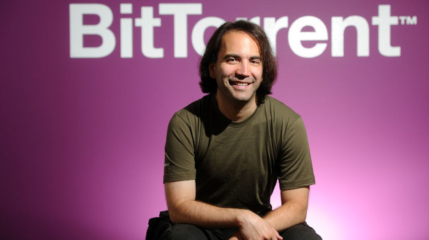

BRAM COHEN
Bram Cohen nasceu em 12 de agosto de 1975 e cresceu em Manhattan, aos 5 anos ele já sabia programar em BASIC que aprendeu usando
um computador que havia em sua casa.
Ingressou na Universidade de Buffalo em NY, mas abandonou para trabalhar em empresas de internet na década de 90, A ultima delas sendo um projeto chamado MojoNation.
A MojoNation era um sistema de aruivos confidencias criptografados que distribuía os arquiuivos em vários computadores, fazendo uma conexão ponto a ponto, onde no caso de necessário download do arquivo existissem varias fontes em ves de apenas uma, fazendo com q o download fosse mais rápido. Quanto mais famoso o arquivo, significava que haveriam mais fontes de download e assim sendo o arquivo seria baixado mais tapido, isso se tornou o posteriormente o BitTorrent.
Em 2001 Cohen deixou o projeto MojkoNation e começou a trtabalhas no BitTorrent, que Cohen apresentou para a comunidade em um evento criado por ele e seu colega de quarto Len Sassama, chamado CodeCon.
Em 2002 Cohen usou imagens pornografias para atrair testadores beta para o BitTorrent, seu projeto ganhou mais atenção quando os usuários de Linux e pessoas q desejavam baixar filmes e musicas começaram a usar seu sistema, que permitia download de arquivos grandes em tempos mais curtos. A versão beta do BitTorrent sai em 2005.
No final de 2003 se juntou a Valve Software para trabalhar no desenvolvimento do Steam, em 2005 ele deixou a Valve e foi viver de doações dos usuários do recém lançado BitTorrent.
Em 2017 Cohen fundou a Chia Network, responsável pela criação da criptomoeda Chia, uma criptomoeda sustentável que utilizava espaço de armazenamento em vez de capacidade de processamento para realizar a mineração. Em 2021 a popularidade dessa moeda causou um desabastecimento de SSD por causa da auto procura para mineração.
Principais contibuições
Criador do sistema de download descentralizado BitTorrent
Criador Network responsável pela criptomoeda sustentável Chia
Onde e com quem trabalhou
Diversas empresas de internet
Década de 90 na MojoNation
2001 a 2005 – Desenvolvendo BitTorrent
2003 a 2005 – Valve Software
2017 – Chia Network

Prêmios
2005: as 100 pessoas mais influentes da Time (entre as 100 pessoas mais influentes em 2005)
2006: Prêmio USENIX STUG